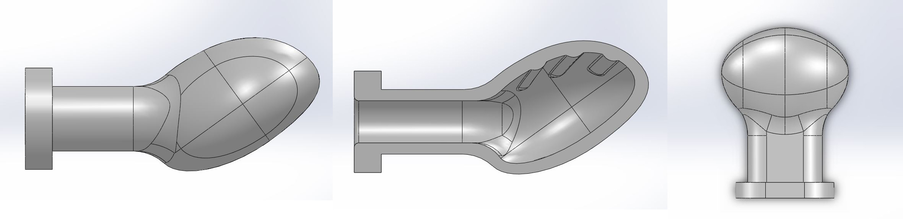
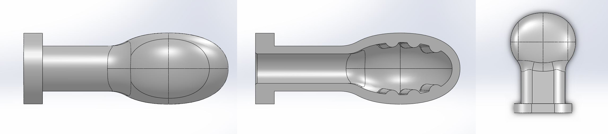
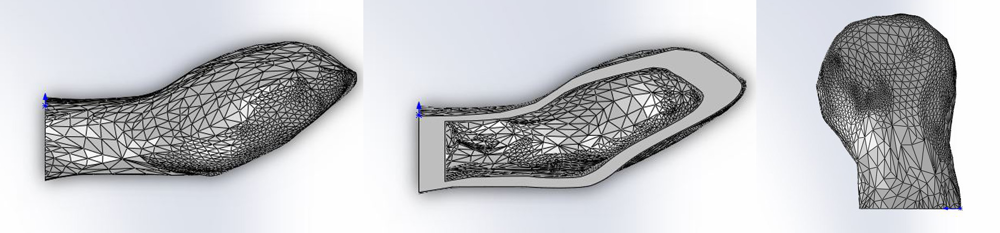
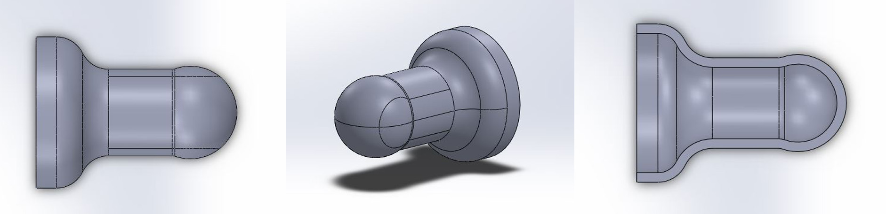
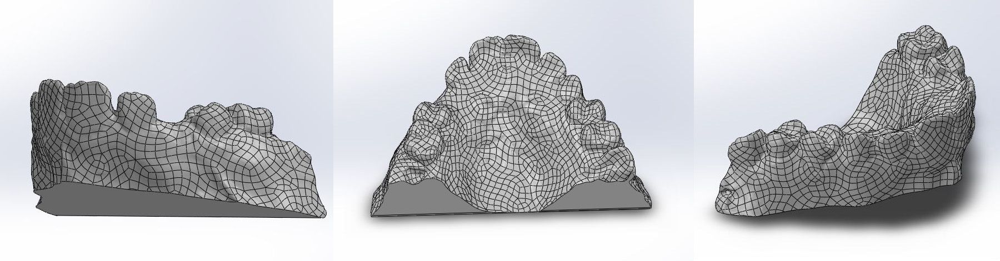

The Context Non-Nutritive Sucking.
One of the foremost behaviors of newborns is sucking, either nutritive in which newborns acquire nourishment or non-nutritive which is a self calming mechanism facilitated by the use of pacifiers. However, the lasting effects of the non-nutritive sucking have not been investigated until recent decades. A 1986 investigation into the dental health of four year-old children in Skaraborg county concluded a rate of cross-bite being five times higher in children with previous pacifier sucking habits than those without.
During sucking, the infant's mouth undergoes a series of peristaltic positions to assist in changing the nipple or pacifier bulb into a swallowable configuration. (1) The infant first uses its tongue to push up the center of the bulb against the mandibular alveolus and teeth. The tongue then ungergoes a wavelike motion from the tip to the back, engaging the pacifier or nipple as it goes. (2) The seond motion is when the tongue tip folds and compresses the pacifier bulb. (3) The bulb has two options at this point, to collapse and fold or to expand compress itself against the upper palate. The tongue enters its third position and "craddles" the bulb as much as it can. (4) As intra-oral pressure peaks, the tongue undergoes a final motion in which it engages the sides of the bulb and continues to deform the bulb.
To reduce the possibility of future dental issues in infants, caused by non-nutritive sucking, pediatric dentist, Dr. Dave Tesini and bio-medical engineer, Josh Wiesman have developed a new pacifier geometry that reduces the force caused by tongue movement and suction on specifically the upper palate.
Using finite element analysis, we have modeled a pacifier undergoing non-nutritive sucking against the upper palate of an infant and analyzed the deformations of the traditional Soothie brand and newly designed Tommee Tippee pacifiers. Though studies on the effects of non-nutritive pacifier sucking in infants are not definitive, there is a high possibility that prolonged pacifier use leads to cross bite or open bite in growing children.
The Design Dr. Tesini's Pacifier.
Dr. Tesini and Mr. Wiesman have created two new designs for pacifiers. The first, Tommee Tippee pacifier (seen below) is similar to the Nature Orthodontic pacifier. The pacifier is designed to collapse into a configuration that forms to the shape of the upper palate when sucked on and thickened ribbing on the upper inner surface that re-enforces the bulb when under pressure. The aim of the Tommee Tippee is to reisist collapse during the third perisaltic motion and compress itself against the upper palate. When a bulb collapses, it forms a narrow median that presses up against the center line of the upper palate, leaving the sides of the center line unsupported and more prone to collapse due to intra-oral pressure. If the Tommee Tippee expands, the tongue has a harder time wrapping around the bulb and compressing it into a swallowable form. This supporting geometry against the upper palate is believed to be beneficial in the formation and growth of infant mouths.
The second design is a variation on the Tommee Tippee that has a more convex bottom hemisphere and has ribbing on both the bottom and top inner surfaces.
The Model and Method CAD Models and FEA.
In order to simulate the perisaltic motions undergone in an infant's mouth, a SolidWorks non-linear, dynamic Simulation containing the upper palte and a target pacifier was created for each of the four pacifiers of interest. Pressures mimicking the forces excerted by the tongue during sucking were applied directly onto the surfaces of the pacifier. The physical tongue was deemed irrelavent. The intra-oral pressure found by Anders Lindner is used, .8688 psi or 59.9 mbar.
For comparison, two popular commercial pacifiers were used. The NUK (top) orthodontic pacifier CAD model was created using a 3D scan and smoothed in blender before being imported into SolidWorks. The NUK was hollowed out by shrinking the CAD model about its centroid, scaled down, and then subtracting the scaled down version from the original. The Soothie (middle) brand pacifier CAD model was acquired from Mr. Wiesman. The upper palate CAD model was also provided by Dr. Tesini and Mr. Wiesman.


The pacifier material was custom defined in SolidWorks as a non-linear elastic material. A Young's Modulus of 27.5 MPa and a Poisson's ratio of .49. The stress-strain curve of a sample of silicone rubber tested on an Instron 3300 is shown. The upper palate was custom defined as a linearly elastic isotropic material with a Young's Modulus of 6 MPa and a Poisson's Ratio of .45. These values were taken from a previous paper by L. Levrini, P. Merlo, and L. Paracchini.
The four perisaltic motions were applied simulated as two offset pressures, each maxing out at .8688 psi. The first pressure, simulating the tongue forces, was applied on the bottom hemisphere of the bulbs. The second pressure was applied on the two sides of the bulbs, emulating the sucking intra-oral pressure of the later perisaltic motions. All four pacifiers were placed in contact with the bottom surface of the upper palate and then adjusted to ensure no interfering meshes. The pacifier shield and the top surface of the upper palate were kept as fixed geometries.
The Bottom Line Stress and Deformation Results.
[hi this is dinter]
Other Projects